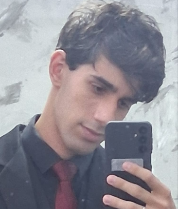

Quem eu sou ▼
Olá me chamo Tawan, tenho 19 anos, atualmente cursando Analise e Desenvolvimento de Sistemas (ADS) na SPTech. Este site começou com um intuito acadêmico, mas me encantei pelo projeto no percurso, não só pela parte lógica, mas por conseguir ver tudo começando a funcionar desde o princípio até os seus retoques finais. Nunca havia programado na minha vida até entrar na faculdade e é realmente gratificante ver algo que imaginei do 0 se tornando realidade. Me identifiquei com todas as partes do site, principalmente no BackEnd, estruturar a API, as rotas, explorar as funcionalidades, etc, embora também tenha gostado bastante de fazer o design do site.
Por que escolhi esse tema ▼
Desde pequeno, sempre estive incluído na cultura Geek, cresci em casa com meu tio jogando diversos jogos e eu jogava com ele também, desde então, não me recordo um dia sequer que não estive envolvido com alguma coisa de jogo, séries, anime, filmes, ou qualquer outra forma de mídia deste tipo.
O primeiro jogo que joguei na vida foi minecraft, lembro da minha felicidade quando finalmente ganhei o jogo de presente de aniversário, aos 7 anos. Após isso fui explorando o mundo dos jogos, jogando Detroit: Become Human, um jogo que verdadeiramente me marcou, Horizon Zero Dawn, The Last Of Us, Mario Party, Mario Galaxy, etc.
Comecei a ver animes aos 12, durante a Pandemia da COVID-19, uma época que não havia muito o que fazer, e minha família também não tinha condições de me dar um computador (naquela época meu video-game antigo havia quebrado), então comecei a buscar outros conteúdos na internet, e foi aí que me encantei com os animes, assistia de tudo quanto é tipo e desde então tenho acompanhado os diversos lançamentos, dentre todos os meus favoritos são: Attack On Titan, Frieren, Jujutsu Kaisen, Akame ga Kill, Chainsaw Man, Code Geass, HunterXHunter, etc.
Então quando precisei escolher o tema do projeto, a resposta foi imediata. Não fazia sentido construir algo sobre um assunto que não vivesse comigo, e esse universo sempre viveu. O Geequiz é, de certa forma, uma homenagem a tudo isso.
O que aprendi ▼
Se pegarmos o início do trabalho, cerca de 5 semanas atrás, até o momento atual, é possível ver uma grande diferença em como eu entendo e desenvolvo as coisas, tanto na parte de programação quanto na lógica por trás dela. Se alguém tirar um tempo para analisar todos os meus commits, conseguirá ver minha evolução: comecei apenas consumindo o conteúdo da API e, hoje, já consigo estruturar lógicas complexas de forma rápida. Desenvolver um projeto inteiro sozinho é realmente desafiador, pois tudo depende de mim. O lado bom é que cada detalhe tem a minha identidade; o lado difícil é a responsabilidade de dar conta de tudo. De todo modo, esse projeto me desenvolveu muito como programador. Ele aprimorou minha lógica, me ensinou a estruturar códigos limpos (fáceis de entender no futuro) e, principalmente, me transformou em um desenvolvedor autônomo, que sabe pesquisar e correr atrás das soluções em vez de apenas esperar as respostas.
Trajetória ▼
Há cerca de 5 semanas comecei o meu projeto individual, a princípio, achei que seria algo simples e não coloquei muita verdade no que diziam, acontece que, como alguém ainda iniciante queria dar um passo maior que minha perna: escolhi desenvolver uma plataforma completa onde o usuário pode tanto cadastrar quanto realizar quizes de outras pessoas. Era um tema super complicado (que o professor me recomendou não fazer) que seria um site onde o usuário tanto cadastra como realiza quizes de outros usuários tudo isso, num período de mais ou menos 6 semanas, tendo que conciliar o projeto, a vida pessoal e as diversas outras atividades acadêmicas no processo.
Durante o desenvolvimento do projeto eu me aperfeiçoei como programador, como já comentado acima, e tive diversos empecilhos durante o caminho, o maior deles, sem sombra de dúvidas, o escopo do meu projeto. Escolher fazer algo desse nível, ainda mais para alguém que nunca tinha programado ativamente antes da faculdade começando a programar - tendo apenas 4 ou 5 meses - foi meio louco da minha parte, mas eu me decidi que iria fazer esse tema, então fui atrás, realmente acho que em certos momentos não era necessário eu fazer tudo que eu fiz, colocar os detalhes que eu coloquei (como o usuário ter um token por exemplo), mas acima de tudo, eu queria fazer o que o professor orientou na hora que ele falou sobre o projeto "façam o seu melhor", foi o que busquei nesse projeto, todas as ideias que eu tinha, por mais loucas que fossem, eu tentava implementar aqui, ao menos em uma parte, para pelo menos saber como funciona e além disso, documentar minha evolução ao longo do processo.
Agora, na reta final, vejo que embora o escopo tenha sido grande foi a melhor decisão que tomei. Não foi algo impossível de se fazer; Afinal, está aqui, pronto, mas foi algo verdadeiramente desafiador e era isso que eu queria durante esse processo.